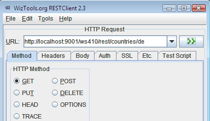

Webservice
Examples
Here you can find examples how to use the bundled
Jersey Webservice Framework with the hybris Platform.
The source code of these examples is part of this extension, you can find it in the src directory of the
platformwebservices extension.
IMPORTANT:
- In order to try our below provided examples you have to download[here] and run the RESTClient.
- Use admin(default password: nimda) account which has the ability to obtain all of WebServices resources,
- or any other user which should have set the read access right to the requested type|resource.
- The ext-hybris/sampledata must be loaded.
| How to get resource via RESTClient |
How to set credentials via RESTClient |
|  |
|
Some URL Examples:
Example 1. User operations
| GET all users: | uri/ws410/rest/users |
| GET demo user: | uri/ws410/rest/users/demo |
|
Example 2. Country operations
| GET all countries: | uri/ws410/rest/countries |
| GET Germany: | uri/ws410/rest/countries/de |
|
Example 3. Region operations
| GET all regions: | uri/ws410/rest/countries/de/regions |
| GET Bavaria region: | uri/ws410/rest/countries/de/regions/DE-BY |
|
Example 4. Language operations
| GET all languages: | uri/ws410/rest/languages |
| GET english language: | uri/ws410/rest/languages/en |
|
Example 5. Catalog operations
| GET all catalogs: | uri/ws410/rest/catalogs |
| GET all available catalog versions: | uri/ws410/rest/catalogs/hwcatalog |
| GET all root categories: | uri/ws410/rest/catalogs/hwcatalog/Online |
| GET category: | uri/ws410/rest/catalogs/hwcatalog/Online/categories/HW1000 |
| GET product: | uri/ws410/rest/catalogs/hwcatalog/Online/products/HW2300-2356 |
|